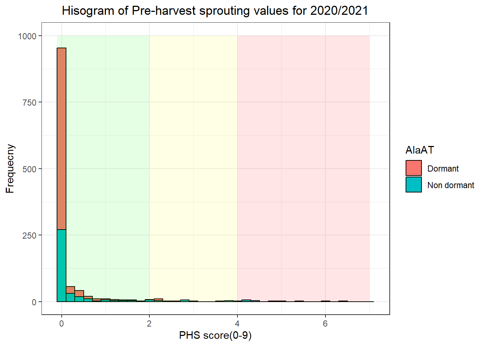

load(paste0(path,"/","data/WMB_DH_Germination_data2020_2021.RData"))#DH2020_2021
load(paste0(path,"/data/Genotype_data/wmb_file.Rdata"))
load(paste0(path,"/data/Genotype_data/numeric_raw.Rdata"))
WinterGM=wmbGAPIT$GM;WinterGD=as.data.frame(wmbGAPIT$GD)
DH2020_2021<-DH2020_2021%>%filter(!Location=="Spring")
marker_ef<-WinterGD%>%as.data.frame()%>%dplyr::select("Qsd1","JHI_Hv50k_2016_308762","JHI_Hv50k_2016_311435")%>%tibble::rownames_to_column()%>%rename(GID=rowname)%>%mutate(Qsd1=as.factor(Qsd1),JHI_Hv50k_2016_308762=as.factor(JHI_Hv50k_2016_308762),"JHI_Hv50k_2016_311435"=as.factor("JHI_Hv50k_2016_311435"))
df_begin<-DH2020_2021%>%mutate(GID=toupper(taxa))%>%filter(!Location=="Spring")%>%left_join(marker_ef,by="GID")%>%mutate(type="base_data_single_step")The SD1 seed dormancy locus influence of pre-harvest sprouting resistance and seed dormancy loss over time
Karl Kunze ![]()
Abstract
Introduction
Barley(Hordeum vulagare L) is grown worldwide for food consumption, animal feed and malt for brewing and distilling. A significant portion of barley acreage in United States and Canada is grown for malting and distilling purposes due to the high premiums compared to animal feed and food consumption. Winter malting barley, where the barley is sown in the fall, is becoming of greater interest to growers, malsters, and brewers. Changes in climate, shifting cropping systems and demand for locally farmed products are pushing the adoption of winter malting barley to be grown in non traditional environments. Growing malting barley in novel environments is challenging, particularly if there is wet and humid conditions during grain fill or at harvest. Selection of malting barley for non traditional enviroments requires a delicate balance to select for grain that does not sprout at harvest but can also provide high quality malt within minimal storage time.
Seed dormancy and pre harvest sprouting(PHS) are critical traits for the production of malting barley. Seed dormancy is defined as the inability of a seed to germinate under favorable conditions (Bewley et al. 2013) and developed as an evolutionary mechanism to avoid stress environments. Dormancy in barley is induced during seed development and is influenced by genetic and environmental factors such as temperature, water context, oxygen availability and light(Gubler, Millar, and Jacobsen 2005). Dormancy peaks at physiological maturity(PM) where the last photosynate leaves the grain, and degrades over a period of time after harvest. The rate of dormancy loss varies widely from days to months based on genotype and environmental conditions during grainfill. Prolonged seed dormancy is undesirable for malting as germination is uneven, has low vigor and and is expensive to store for long periods of time. Barley that has little to no dormancy at physiological maturity is prone to pre-harvest sprouting(PHS), where wet and humid conditions induce starch degredation and germination in the field before harvest. PHS can be visible in the form of visible radicle and collectible emergence or in pre germination where starch in the grain begins to degrade. Pregerminated grain is most often usuable for malt or food purposes. Acheiving the balance between PHS resistance and high quality malt is a key breed target for barley breeding.
Genetic sources of PHS resistance and seed dormancy have been well characterized in barley. The large effect QTL loci of SD1 and SD2 on chromosome 5H have been mapped extensively in a wide range of barley germplasm. (Han et al. 1996; ullrich1992quantitative?; Lin et al. 2009). Genes have been cloned at each locus: alanine aminotransferase at SD1(HvAlaT1 Sato et al. 2016) and a mitogen-actived protein kinase kinase 3 at SD2(HvMKK3 Nakamura et al. 2016). Alleles for both AlaAT and MKK3 have been identified by Vetch et al. (2020) (sweeneyInteractionsBarleySD12022?) (sweeney2022?) for spring and winter barley germplasm. The mutation L214F in AlaAT results in a loss of dormancy. ALaAT has been one of the first targets of Cas9-induced mutagenesis in barley Hisano et al. (2022) prolonging dormancy in mutant types.
Genome wide associations studies(GWAS) have become the standard practice to identify traits of interest in various types of breeding populations. Numerous GWAS methods are available, and improvement to models that account for population structure Yu and Buckler (2006) using principal component analysis “Price: Principal Components Analysis Corrects for... - Google Scholar” (n.d.) and the inclusion of kinship and Q matrix allow for mapping association studies to be conducted across structed populations
Advances in barley marker platforms such as the Illumina barley 50K SNP chip Bayer et al. (2017) and the development of improved barley reference genomes (Mascher et al. 2021) have made for higher resolution mapping of relevant malting barley traits. Increased efficiency of models and computation power have allowed not only for the association of high density marker platforms with large phenotypes, but also the use of single step GWAS modeling. Single step GWAS offers more flexibility with the capacity for the integration of more phenotypic information, inclusion of multiple fixed and random effects, as well as retaining more information that can be lost in two step analyses.
The objectives of this study aimed to genetic characterize pre-harvest sprouting and seed dormancy loss over time in a connected half sib winter malting barley breeding population. Our goals for this research were to a) Identifiy QTL for PHS, seed dormancy and seed dormacy loss over time using GWAS and b) model seed dormancy loss over time to assess optimal selection for seed dormancy. Understanding the genetic basis for PHS, seed dormancy, and seed dormancy loss over time will be invaluable information for breeders to select highly quality malting barley that have PHS resistance while also maintain a short seed dormancy period to ensure high malting quality.
Methods
Plant populations
The populations used in study were part of the winter malting barley breeding population at Cornell University. Four bi-parental half sibling populations were developed by crossing a common parent ‘Lightning’ Hayes et al. (2021) , a faculative type barley, to four winter malting barley cultivars; ‘KWS Scala’, ‘Flavia’, ‘SY Tepee’ and ‘Wintmalt’. Double haploids were developed from the crosses at Oregon state University using anther culture of \(F_1\) seed from each cross. After sufficient seed increase, lines were planted in fall 2019 and fall 2020 in two fields each season in Ithaca, NY. Fields in 2019 for the 2020 harvest season,named Snyder and Ketola 5, were planted in a modified augmented design of single 1m rows with all parent lines(5), and check ‘Charles’ replicated in blocks across the field. The total number of plots for each locations was 544. The ratio of checks to experimental lines was approximately 10%. Fields sown in 2020 for the 2021 harvest season, named Ketola 3 and McGowan , were planted according to a randomized 480 plot augmented block design of 3 x 1 meter trimmed plots with parent lines “Lightning” and “KWS Scala” and additional line “Endeavor” used as checks. The ratio of checks to experimental lines was approximately 11%.
Field Phenotyping and sampling
Physiological maturity(PM) was recorded as the date when 50% of the of plot lost green color from the peduncle and spike. Two days after PM, bundles of 15-20 selected mature spikes were harvested, dried for 2 days at 38 C, hand threshed, and stored at -20C to pause after-ripening. Nagel et al. (2019) The standardization of harvesting and freezing spikes 2 days after the PM of the plot enabled observation of traits at the same number of after-ripening for all lines.
For seed dormancy in 2020, a total of 450 lines were sampled from each location. Lines with poor winter survival and poor agromic quality were excluded. For seed dormancy 2021 the complete trial at ketola of 435 lines(480 plots) was sampled, and approximatley 25% of lines at the McGowan location were sampled.
PHS was measured by harvesting 5 spikes per headrow at physiological maturity (PM), after-ripening for 3 days, and then misting in a greenhouse for 3 days, after which the spikes were assessed for PHS on a 0 to 9 scale. Anderson, Sorrells, and Tanksley (1993) Due to labor constraints brought on by the pandemic in the 2020 field season, phenotyping capacity was limited and seed dormancy sampling was prioritized for that year. PHS was phenotyped on a sub-sample of 100 lines from the Ketola 5 location. The sub-sample consisted of all facultative types across all four families, parental checks, and Charles. For 2021, all plots from both locations were sampled.
In addition to dormancy sampling in 2021, 120 lines were selected for micromalting analysis, with 60 lines overlapping between the two locations and an additional 60 lines selected based on seed avaialability after appropriated amounts for the seed dormancy tests. Lines were processed in an identical manner to the seed dormancy sampling method
Post harvest germination assay
To measure dormancy loss, all samples were removed the freezer at the same time, beginning the after-ripening process at the same physiological state for all lines. Samples were stored at ambient room temperature for the duration of the experiment. Germination assays were measured with petri plate assay tests that followed the American Society of Brewing Chemists (ASBC) (Kuester et al. 1997) with modifications and subsequent steps followed in Sweeney et al. (2021). The first modification was the use of 30 kernels instead of 100 kernels. The second modification was an extended germination count from 3 days to 5 days in lieu of counting for 3 days and using H2O2 to break dormancy. Germination ernergy(GE) as a measure of seed dormancy was determined as
\(GE = \frac{n_{24} + n_{48} + n_{72}}{n_{total}}\)
\(GE_{5 day} = \frac{n_{24} + n_{48} + n_{72}+n_{96}+n_{120}}{n_{total}}\)
Where \(n\) corresponds to the the number of germinated kernels at 24, 48, 72, 96 and 120 hours after the start of the assay and \(n_{total}\) is the total number of germinated and ungerminated kernels.
Germination Index was calculated as a germination rate following: Frančáková et al. (2012)
$\(GI_{base_{3 day}}=\frac{10 *(n_{24}+n_{48} +n_{72})} {1n_{24}+2n_{48}+3n_{72}}\)$
\(GI_{base_{5 day}}=\frac{10 *(n_{24}+n_{48} +n_{72}+n_{96}+n_{120})} {1n_{24}+2n_{48}+3n_{72}+4n_{96}+5n_{120}}\)
where \(n_{24}\), \(n_{48}\), \(n_{72}\), \(n_{48}\) and \(n_{120}\) were the number of germinated kernels at 24, 48, 72, 96 and 120 hours after the start of the assay. GI was scaled by GE as \(GI=GI_{base}*GE\) to account for low germination at earlier timepoints.
GE and GI were measured at five time points for 2020: 5 (TP1), 19 (TP2), 47 (TP3), 96 (TP4), and 152 (TP5) days post PM. GE and GI measured at eight time points for 2021: 5(TP1), 12(TP1.5), 19 (TP2), 33(TP2.5), 47(TP3), 68 (TP3.5), 96 (TP4) and 152(TP5) days post PM.
In addition to measuring germination, a 120 line malting quality subset previously mentioned were taken out freezing concurrently with the dormancy samples
Malting quality samples were sent to the USDA Cereal Crops and research unit(CCRU) in Madison, WI. The small grain samples were frozen upon arrival. Each line was malted in single replicates at two different time points corresponding 67 days post PM and 152 post PM. Due to limits on how many tea ball samples could be malted at one time, the samples were malted in batches every week for two months. Malting procedure and analysis were performed in the methods described by Schmitt and Budde (2011) # summary statistics
getwd()[1] "C:/Users/kars8/git/BarleyGermination-KK/ms"load("Rdata/genetic_variance_h2.Rdata")
phenoS1<-flextable(sum_table,cwidth = 0.1,cheight = 0.1)%>%theme_zebra()%>%font(fontname = "Times New Roman",part = "header")
phenoS1<-phenoS1%>%align(align = "justify",part = "header")%>%align(align = "justify",part = "body")%>%autofit(part="body",hspans = "divided")%>%fontsize(size = 9,part = "body")%>%fontsize(size = 9,part = "header")%>%
bold(bold = TRUE, part = "header")%>%set_caption(caption=as_paragraph(as_chunk("Summary statistics single and combined time point analysis ",props = fp_text_default(font.family = "Times New Roman", bold = FALSE))),fp_par(text.align="justify"),align_with_table = FALSE)%>%align(align = c("left"),part = "footer")%>%fontsize(size=8,part="footer")
phenoS1ID | trait | Year | PM_date | mean | range | o2g | h2 | h2_PEV |
|---|---|---|---|---|---|---|---|---|
GE-2020-PM_5 | GE | 2020 | 5 | 0.347 | 0.00-1.00 | 0.0570000 | 0.8426000 | 0.6333000 |
GE-2020-PM_19 | GE | 2020 | 19 | 0.605 | 0.00-1.00 | 0.1658000 | 0.8911000 | 0.7155000 |
GE-2020-PM_47 | GE | 2020 | 47 | 0.929 | 0.13-1.00 | 0.0104000 | 0.5609000 | 0.6066000 |
GE-2020-PM_96 | GE | 2020 | 96 | 0.988 | 0.77-1.00 | 0.0001000 | 0.1046000 | 0.2341000 |
GE-2020-PM_152 | GE | 2020 | 152 | 0.993 | 0.87-1.00 | 0.0002000 | 0.4123000 | 0.5440000 |
GI-2020-PM_5 | GI | 2020 | 5 | 1.483 | 0.00-8.82 | 1.1370000 | 0.8521000 | 0.6372000 |
GI-2020-PM_19 | GI | 2020 | 19 | 2.865 | 0.00-8.49 | 5.4616000 | 0.9233000 | 0.7270000 |
GI-2020-PM_47 | GI | 2020 | 47 | 4.757 | 0.48-10.00 | 2.0928000 | 0.8694000 | 0.7070000 |
GI-2020-PM_96 | GI | 2020 | 96 | 5.591 | 3.55-10.00 | 0.3245000 | 0.6492000 | 0.6355000 |
GI-2020-PM_152 | GI | 2020 | 152 | 5.685 | 3.56-8.25 | 0.1547000 | 0.4440000 | 0.5590000 |
GE-2020/2021-PM_5 | GE | 2020/2021 | 5 | 0.203 | 0.00-1.00 | 0.0451000 | 0.7287000 | 0.4102000 |
GE-2020/2021-PM_19 | GE | 2020/2021 | 19 | 0.508 | 0.00-1.00 | 0.1127000 | 0.6487000 | 0.4329000 |
GE-2020/2021-PM_47 | GE | 2020/2021 | 47 | 0.753 | 0.00-1.00 | 0.0320000 | 0.4508000 | 0.3396000 |
GE-2020/2021-PM_96 | GE | 2020/2021 | 96 | 0.972 | 0.21-1.00 | 0.0002000 | 0.0342000 | 0.0025000 |
GE-2020/2021-PM_152 | GE | 2020/2021 | 152 | 0.987 | 0.52-1.00 | 0.0002000 | 0.1407000 | 0.0146000 |
GI-2020/2021-PM_5 | GI | 2020/2021 | 5 | 0.854 | 0.00-8.82 | 0.9797000 | 0.7371000 | 0.4449000 |
GI-2020/2021-PM_19 | GI | 2020/2021 | 19 | 2.376 | 0.00-8.49 | 3.7627000 | 0.8508000 | 0.4743000 |
GI-2020/2021-PM_47 | GI | 2020/2021 | 47 | 3.818 | 0.00-10.00 | 2.3823000 | 0.7407000 | 0.4330000 |
GI-2020/2021-PM_96 | GI | 2020/2021 | 96 | 5.356 | 0.89-10.00 | 0.5395000 | 0.6655000 | 0.4098000 |
GI-2020/2021-PM_152 | GI | 2020/2021 | 152 | 5.611 | 2.32-9.09 | 0.2937000 | 0.5001000 | 0.3592000 |
PHS-2020/2021-PM_3 | PHS | 2020/2021 | 3 | 0.25 | 0-6.4 | 0.1746883 | 0.3723423 | 0.5932804 |
GE-2021-PM_5 | GE | 2021 | 5 | 0.094 | 0.00-1.00 | 0.0772000 | 0.8507000 | 0.7226000 |
GE-2021-PM_12 | GE | 2021 | 12 | 0.262 | 0.00-1.00 | 0.0947000 | 0.8030000 | 0.6569000 |
GE-2021-PM_33 | GE | 2021 | 33 | 0.447 | 0.00-1.00 | 0.3889000 | 0.9597000 | 0.9363000 |
GE-2021-PM_68 | GE | 2021 | 68 | 0.789 | 0.00-1.00 | 0.2315000 | 0.9468000 | 0.3180000 |
GE-2021-PM_96 | GE | 2021 | 96 | 0.949 | 0.21-1.00 | 0.0241000 | 0.8817000 | 0.2642000 |
GE-2021-PM_152 | GE | 2021 | 152 | 0.978 | 0.52-1.00 | 0.0004000 | 0.1478000 | 0.0000000 |
GI-2021-PM_5 | GI | 2021 | 5 | 0.377 | 0.00-7.25 | 1.1687000 | 0.8521000 | 0.7464000 |
GI-2021-PM_19 | GI | 2021 | 19 | 1.711 | 0.00-7.89 | 4.1367000 | 0.9002000 | 0.7071000 |
GI-2021-PM_33 | GI | 2021 | 33 | 2.106 | 0.00-7.56 | 4.6686000 | 0.8922000 | 0.7037000 |
GI-2021-PM_47 | GI | 2021 | 47 | 2.476 | 0.00-9.09 | 4.0233000 | 0.8382000 | 0.9002000 |
GI-2021-PM_68 | GI | 2021 | 68 | 3.906 | 0.00-8.11 | 0.5587000 | 0.7056000 | 0.3506000 |
GI-2021-PM_96 | GI | 2021 | 96 | 5.023 | 0.89-10.00 | 0.5156000 | 0.8124000 | 0.6674000 |
GI0-2021-PM_152 | GI0 | 2021 | 152 | 5.624 | 3.55-9.09 | 0.3914000 | 0.5966000 | 0.5833000 |
heritability
Genotyping
The entire double haploid population was genotyped with the 50K Barley SNP array Bayer et al. (2017) at the USDA small grains research laborartory in Fargo, ND. Marker positions were based on the Morex version 3 assembly (Mascher et al. 2021). Markers were filtered a maximum heterozygosity level of 0.01 and a minumum minor allele frequency of 0.05 using rTASSEL Monier et al. (2022), resulting in a total of 13,452 markers. The R package @ZhengSNP2012 used to Linkage Disequlibrium(LD) prune markers using a sliding base pair window of 2000 markers and a maximum LD threshold of 0.9. PCA analysis was also conducted with the SNPRelate package. After LD pruning, 9628 markers remained for analysis. KASP markers were used to genotype HVAlaAT and HvMKK3 folllowing casual mutations discovered in Sato et al. (2016) and Nakamura et al. (2016) respectively. Details of KASP marker development can be found in Sweeney, Kunze, and Sorrells (2021).
Statisical Analysis
Given the advancement in computational efficiency, per time point GWAS was analzyed using a single step approach. The package Galli et al. (2022) was used to develop the K and Q matricies, filter out missing information, and conduct single step GWAS using the raw data as input. ASRgwas model flexibility allowed for the integration of fixed, random, covariate and residual factor integration. The base model for GWAS per timepoint was as follows:
\[y_{} \sim 1\mu + X\beta+Z_{1}u + Q\delta + \epsilon\]
Where \(y\) is the response variable for GI, \(GI_{base}\) or GE, \(\mu\) is the overall mean, \(\beta\) is a vector of fixed effects(i.e. Location, replication), \(u\) is the vector of addivitive genotype effects assoicated with the genomic additive relationship matrix with \(u \sim N(0,G_{A}\sigma^2_{A})\), \(Q\) is a matrix of vectors describing population structure and \(\delta\) corresponds to the number of vectors(PCAs) of the Q matrix to be included to account for population structure and \(\epsilon ~N(0,E\sigma^2)\) where \(E\) is either a incidence matrix corresponding independently and identically distributed residuals or a heteroscadistic error structure. A summary of model terms included for each timepoint is presented in table 2 both for within years and across years. #Model terms
model_2020_GI<-data.frame(year=rep("2020",5),trait=rep("GI",5),PM_date=c(5,19,47,96,152),Q=rep("yes",5),npc=rep("2",5),Fixed=c("Location + Rep","Location",NA,NA,NA),Random=rep(NA,5),Residual=c(NA,"Location",NA,NA,NA),Converged=rep("yes",5))
model_2020_GE<-data.frame(year=rep("2020",5),trait=rep("GE",5),PM_date=c(5,19,47,96,152),Q=rep("yes",5),npc=rep("2",5),Fixed=c("Location","Location","Location:Rep + Location + Rep","Location","Location"),Random=rep(NA,5),Residual=c(NA,"Location",NA,NA,NA),Converged=c("yes","yes","yes","no","yes"))
models2020=rbind(model_2020_GI,model_2020_GE)
##
model_2021_GI<-data.frame(year=rep("2021",8),trait=c(rep("GI",6),rep("GI_base",2)),PM_date=c(5,22,19,33,47,68,96,152),Q=rep("yes",8),npc=rep("2",8),Fixed=c(NA,NA,NA,"Rep",NA,"Location","Location:Row + replication","Location"),Random=rep(NA,8),Residual=c("Location",NA,"Rep",NA,NA,NA,"Row",NA),Converged=c("yes","yes","yes","yes","yes","yes","yes","yes"))
model_2021_GE<-data.frame(year=rep("2021",8),trait=c(rep("GE",8)),PM_date=c(5,22,19,33,47,68,96,152),Q=rep("yes",8),npc=rep("2",8),Fixed=c(NA,NA,"Qsd1","replication:Row",NA,"Location:Row + Row","Location:Row","Location:Row"),Random=rep(NA,8),Residual=c("Location",NA,"Rep",NA,NA,NA,"Location",NA),Converged=c("no","yes","yes","yes","yes","yes","no","no"))
models2021=rbind(model_2021_GI,model_2021_GE)
#combined
model_combined_GI<-data.frame(year=rep("2020/2021",5),trait=rep("GI",5),PM_date=c(5,19,47,96,152),Q=rep("yes",5),npc=rep("2",5),Fixed=c("Year:Location","Location:Year","Year:Rep","Year + Year:Rep","Year + Year:replication"),Random=rep(NA,5),Residual=c("Year",NA,"Year",NA,NA),Converged=rep("yes",5))
model_combined_GImodel_combined_GE<-data.frame(year=rep("2020/2021",5),trait=rep("GE",5),PM_date=c(5,19,47,96,152),Q=rep("yes",5),npc=rep("2",5),Fixed=c("Year+ Year:Location",NA,"Year:Location + Location","Year:Location",NA),Random=rep(NA,5),Residual=c(NA,"Year",NA,NA,NA),Converged=c("no",rep("yes",4)))
phs_sum<-data.frame(year=rep("2020/2021"),trait="PHS",PM_date=c(7),Q=rep("yes",1),npc="2",Fixed=c("Year+ Year:Location"),Random=rep(NA,1),Residual=c(NA),Converged=c("yes"))
model_table1<-rbind(models2020,models2021,model_combined_GI,model_combined_GE,phs_sum)%>%relocate(trait,.before = 1)E1_ft<-flextable(model_table1,cwidth = 0.1,cheight = 0.1)%>%theme_zebra()%>%font(fontname = "Times New Roman",part = "header")
E1_ft<-E1_ft%>%align(align = "justify",part = "header")%>%align(align = "justify",part = "body")%>%autofit(part="body",hspans = "divided")%>%fontsize(size = 9,part = "body")%>%fontsize(size = 9,part = "header")%>%
bold(bold = TRUE, part = "header")%>%set_caption(caption=as_paragraph(as_chunk("Summary of the fixed, random and residual model terms fitted each timepoint across germination energy and index for genome wide assocation modeling ",props = fp_text_default(font.family = "Times New Roman", bold = FALSE))),fp_par(text.align="justify"),align_with_table = FALSE)%>%
#E1_ft<-E1_ft%>%add_footer_lines(E1_ft, values = "")
footnote(i = c(1), j = c(1),
value = as_paragraph(
c("GI: Germination index, GE: Germination Energy, GI_base:unadjusted germination index, PM Date: Post physiological maturity date and timepoint,Q: fixed effect population structure matrix, npc: number of principal components included, Rep: Replication")),
ref_symbols = c("a"),
part = "header")
E1_ft_2<-E1_ft%>%align(align = c("left"),part = "footer")%>%fontsize(size=8,part="footer")
#
# footnote(i = c(1), j = c(2),
# value = as_paragraph(
# c("BSR-Barley Stripe Rust;LR-Leaf Rust;SB-Spot Blotch;SLD-Scald")),
# ref_symbols = c("b"),
# part = "header")
E1_ft_2traita | year | PM_date | Q | npc | Fixed | Random | Residual | Converged |
|---|---|---|---|---|---|---|---|---|
GI | 2020 | 5 | yes | 2 | Location + Rep | yes | ||
GI | 2020 | 19 | yes | 2 | Location | Location | yes | |
GI | 2020 | 47 | yes | 2 | yes | |||
GI | 2020 | 96 | yes | 2 | yes | |||
GI | 2020 | 152 | yes | 2 | yes | |||
GE | 2020 | 5 | yes | 2 | Location | yes | ||
GE | 2020 | 19 | yes | 2 | Location | Location | yes | |
GE | 2020 | 47 | yes | 2 | Location:Rep + Location + Rep | yes | ||
GE | 2020 | 96 | yes | 2 | Location | no | ||
GE | 2020 | 152 | yes | 2 | Location | yes | ||
GI | 2021 | 5 | yes | 2 | Location | yes | ||
GI | 2021 | 22 | yes | 2 | yes | |||
GI | 2021 | 19 | yes | 2 | Rep | yes | ||
GI | 2021 | 33 | yes | 2 | Rep | yes | ||
GI | 2021 | 47 | yes | 2 | yes | |||
GI | 2021 | 68 | yes | 2 | Location | yes | ||
GI_base | 2021 | 96 | yes | 2 | Location:Row + replication | Row | yes | |
GI_base | 2021 | 152 | yes | 2 | Location | yes | ||
GE | 2021 | 5 | yes | 2 | Location | no | ||
GE | 2021 | 22 | yes | 2 | yes | |||
GE | 2021 | 19 | yes | 2 | Qsd1 | Rep | yes | |
GE | 2021 | 33 | yes | 2 | replication:Row | yes | ||
GE | 2021 | 47 | yes | 2 | yes | |||
GE | 2021 | 68 | yes | 2 | Location:Row + Row | yes | ||
GE | 2021 | 96 | yes | 2 | Location:Row | Location | no | |
GE | 2021 | 152 | yes | 2 | Location:Row | no | ||
GI | 2020/2021 | 5 | yes | 2 | Year:Location | Year | yes | |
GI | 2020/2021 | 19 | yes | 2 | Location:Year | yes | ||
GI | 2020/2021 | 47 | yes | 2 | Year:Rep | Year | yes | |
GI | 2020/2021 | 96 | yes | 2 | Year + Year:Rep | yes | ||
GI | 2020/2021 | 152 | yes | 2 | Year + Year:replication | yes | ||
GE | 2020/2021 | 5 | yes | 2 | Year+ Year:Location | no | ||
GE | 2020/2021 | 19 | yes | 2 | Year | yes | ||
GE | 2020/2021 | 47 | yes | 2 | Year:Location + Location | yes | ||
GE | 2020/2021 | 96 | yes | 2 | Year:Location | yes | ||
GE | 2020/2021 | 152 | yes | 2 | yes | |||
PHS | 2020/2021 | 7 | yes | 2 | Year+ Year:Location | yes | ||
aGI: Germination index, GE: Germination Energy, GI_base:unadjusted germination index, PM Date: Post physiological maturity date and timepoint,Q: fixed effect population structure matrix, npc: number of principal components included, Rep: Replication | ||||||||
components
the package Galli et al. (2022)
We previously reported development of a high-throughput Kompetitive Allele Specific Primer (KASP) marker AlaAT1_L214F for the causal mutation in HvAlaAT1 discovered by Sato et al. (2016). We also developed KASP assays for a SNP in the 5’ UTR of HvGA20ox1 (GA20ox1_331_5UTR), the E165Q mutation in HvMKK3 identified in Vetch et al. (2020) for both spring barley and winter barley. A summary of the winter barley haplotypes for the parent lines and checks are found in QTL x environment modeling of malting barley preharvest sprouting (Sweeney et al. 2021). All experimental lines and parent genotypes were monomorphic for dormant HvMKK3. The check lines Charles and Endeavor used as a phs susceptibility check in 2020 and 2021 respectively, have the highly non-dormant (N*) allele for MKK3 and the dormant AlaAT(D) allele, however we cannot make specific conclusions about this haplotype given the low representation in the winter barley population.
All lines were genotyped with the 50Fk Illumina Infinium iSelect SNP array at the USDA Small Grains Genotyping Lab in Fargo, ND. After filtering poor quality markers, minor allele frequency (MAF) below 0.05, and monomorphic sites, 15,467 polymorphic markers remained and were used for genome-wide association (GWA). After conducting linkage disequilibrium (LD) pruning to reduce high LD blocks that exist in double haploid populations, we retained 8,384 markers for analysis. A summary of the GWA results is presented in Table 1. Models were run for all trait/time point combinations
Results
library(ggplot2)
load("Rdata/WinterRelationship.Rdata")
WinterPCA = eigen(WinterRelationship)
WinterPVEPCA = WinterPCA$values/sum(WinterPCA$values)
#data.frame(ordinal = 1:10, PVE = WinterPVEPCA[1:10]) %>%plot(., xlab = 'PC', col = 'red')
winterlinePCAvalues = WinterPCA$vectors %>% data.frame()%>%
mutate(family = plyr::mapvalues(substr(rownames(WinterGD),1,3), from = toupper(c('BS6','BS7','BS8','BS9','Lig','Fla','Tep','Sca','Win',"End","Cha","Che")),
to = c('Flavia/Lightning','Scala/Lightning','SY_Tepee/Lightning','Wintmalt/Lightning',
'Lightning','Flavia/Lightning','SY_Tepee/Lightning','Scala/Lightning','Wintmalt/Lightning',"Check","Check","Check")),
taxa = rownames(WinterGD),
shapes = ifelse(taxa %in% toupper(c('Lightning', 'Flavia','Tepee','Wintmalt','Scala')), taxa, 'Lines'),
size = ifelse(taxa %in% toupper(c('Lightning', 'Flavia','Tepee','Wintmalt','Scala')), 3, 2))The following `from` values were not present in `x`: CHA, CHEPCA_DH<-winterlinePCAvalues %>% mutate(shapes=gsub("(^|[[:space:]])([[:alpha:]])", "\\1\\U\\2",
tolower(winterlinePCAvalues$shapes),
perl = TRUE),size=ifelse(size==2,3,4))%>%filter(family !=c('Check')) %>%
ggplot(aes(x = X1, y = X2, color = family, shape = shapes)) + geom_point(aes(size = size))+theme_bw() +guides(shape=guide_legend(title = "Variety/Experimental Line"),size="none",color=guide_legend(title="Family/Population"))+xlab(as.character(paste0("PC1: ",round(WinterPVEPCA[1]*100,2),"%")))+ylab(as.character(paste0("PC2: ",round(WinterPVEPCA[2]*100,2),"%")))+ggtitle(lab="Principal component analysis plot of the \n NY winter malting barley double haploid population")+theme(plot.title = element_text(hjust = 0.5))+scale_x_continuous(expand = c(0, 0), limits = c(-0.125, 0.125))+scale_y_continuous(expand = c(0, 0), limits = c(-0.125, 0.125))
PCA_DH
library(tidyr)
library(ggh4x)
library(Hmisc)
df_begin$Family<-gsub("DH130910","Lightning",df_begin$Family)
df_begin_long<-df_begin%>%mutate(GI_0=GI/GE)%>%mutate(GI_0=ifelse(is.nan(GI_0),NA,GI_0))%>%pivot_longer(names_to="trait",cols=c("GE","GI"))%>%rename(year=Year)
df2<-df_begin_long%>%filter(PM_date%in%c("5","19","47","96","152"))
df2$year<-"2020/2021"
op<-df_begin_long%>%rbind(df2)%>% mutate(headerFacet = 'Dataset Year') %>%
ggplot(aes(x = PM_date, y = value, group = GID))+
geom_smooth(na.rm = TRUE,se=FALSE,linewidth=0.2,colour="black")+ggh4x::facet_nested(trait~headerFacet+year, scales = 'free')+
geom_vline(xintercept = c(12,33,68), color = 'red')+
labs(title = 'Germination Energy and Index over time by individual genotype')+theme_bw()library(Hmisc)
WinterGD$taxa<-rownames(WinterGD)
WinterGD<-WinterGD%>%relocate(taxa,.before = 1)
df_begin_long%>%rbind(df2) %>% mutate(year = factor(year, levels = c('2020','2021','2020/2021')))%>%
plyr::join(WinterGD[,c('taxa','Qsd1')]) %>% filter(Qsd1!= 1) %>% mutate(Qsd1= ifelse(Qsd1==2,'Nondormant','Dormant')) %>% plyr::join(WinterGD[,c('taxa','JHI_Hv50k_2016_8507')]) %>% filter(JHI_Hv50k_2016_8507!= 1) %>% mutate(JHI_Hv50k_2016_8507= ifelse(JHI_Hv50k_2016_8507==2,'minor','ref'))%>%
filter(Family %nin% c('Lightning')) %>%
# filter(!(year == '2020/2021' & TP %in% c('TP1.5','TP2.5','TP3.5'))) %>%
filter(!(trait =='GE' &value>1.05)) %>%
ggplot(aes(x=PM_date,y=value,fill = Qsd1))+
geom_boxplot(outlier.shape =NA)+ggh4x::facet_nested(trait~Family+year, scales = 'free')+
labs(x="Time Point",y="Germination value")+ggtitle(label = paste0("Germination rates by grouping of AlaAT"))+
theme_bw()+theme(axis.text.x = element_text(angle = 90),plot.title = element_text(hjust=0.5))+guides(fill=guide_legend(title="AlaAT"))Joining by: taxa, Qsd1Joining by: taxaWarning: Removed 157 rows containing non-finite values (`stat_boxplot()`). {#fig-AlaAT Distributions width=672}
{#fig-AlaAT Distributions width=672}
#PHS
phs_setup<-df_begin_long%>%rbind(df2) %>% mutate(year = factor(year, levels = c('2020','2021','2020/2021')))%>%
plyr::join(WinterGD[,c('taxa','Qsd1')]) %>% filter(Qsd1!= 1) %>% mutate(Qsd1= ifelse(Qsd1==2,'Dormant','Nondormant')) %>% plyr::join(WinterGD[,c('taxa','JHI_Hv50k_2016_8507')]) %>% filter(JHI_Hv50k_2016_8507!= 1) %>% mutate(JHI_Hv50k_2016_8507= ifelse(JHI_Hv50k_2016_8507==2,'minor','ref'))%>%
filter(Family %nin% c('Lightning')) %>%select(phs,Qsd1,taxa,SourcePLOT,Location,year)%>%unique()Joining by: taxa, Qsd1Joining by: taxa # filter(!(year == '2020/2021' & TP %in% c('TP1.5','TP2.5','TP3.5'))) %>%
phs_dist<-phs_setup%>%group_by(taxa)%>%
ggplot(aes(phs, fill = Qsd1))+
geom_histogram(binwidth = 0.2,col=I("black"))+
labs(x="PHS score(0-9)",y="Frequecny")+ggtitle(label = paste0("Hisogram of Pre-harvest sprouting values for 2020/2021"))+
theme_bw()+theme(axis.text.x = element_text(angle = 0),plot.title = element_text(hjust=0.5))+
annotate('rect', xmin=-0.1, xmax=2, ymin=0, ymax=1000, alpha=.1, fill='green')+
annotate('rect', xmin=2, xmax=4, ymin=0, ymax=1000, alpha=.1, fill='yellow')+
annotate('rect', xmin=4, xmax=7, ymin=0, ymax=1000, alpha=.1, fill='red')
phs_distWarning: Removed 1554 rows containing non-finite values (`stat_bin()`). # stat_bin(aes(y=(phs)/sum(phs),
# label=round((phs)/sum(phs),2)),
# geom="text", size=4, binwidth = 0.1, vjust=-1.5)
Pre-harvest sprouting
For the 2020 year, we only did a subsample of phs scoring. While the 2020 data did follow the trend explained for the 2021 results, we did not have enough observations to determine whether all experimental lines in the 2020 year were resistant or susceptible to phs in the 2020 environment mainly due to low variation and sample size. In our first complete year observation of the 435 unique lines in our trials, we found that 95% of our experimental lines were pre-harvest sprouting resistant (0-2 score) across two locations. Approximately 4.4 % were somewhat resistant (2-4) and only 1.6 % of our lines were PHS susceptible (above 4). The low mean of phs for most of the lines is encouraging, however phs needs to be tested in at least more than one year to account for different environmental effects. This is particularly important given the significant increased dormancy we observed for the 2021 year. Given the low variation of phs scores, correlations were low to most of the GE and GI timepoints. PHS was only moderately correlated with the first timepoint (PM 5) for GE(0.633) and GI(0.683). Even with a week of after ripening, correlation with phs scores dropped significantly at time point 1.5(12 days post PM) for GE(0.367) and GI(0.415). This suggests that for our winter barley population, there is potential to select for increased dormancy break while maintaining PHS resistance. Broad sense heritability for all germination traits, timepoints, years and combinations were very high(0.9). Heritability dropped slight for GE at later time points due to reduced variation but still retained heritability values a minimum~0.75
#making a table for significant effects
#manhattan plot
load(paste0(path,"/data/GWA_results/STP_all.Rdata"))
ord_list<-STP_all[STP_all$ID=="GI-2020/2021-PM_152",c("chrom","pos","marker","ordinal")]
ord_list<-ord_list%>%arrange(chrom,pos)%>%mutate(ordinal=1:n())
table_chr<-STP_all%>%ungroup()%>%filter()%>%dplyr::select(marker,chrom,pos,ordinal)%>%arrange(chrom,pos)%>%mutate(ordinal=plyr::mapvalues(marker,from=ord_list$marker,to=ord_list$ordinal),ordinal=as.numeric(ordinal))%>%unique()Warning: There was 1 warning in `mutate()`.
ℹ In argument: `ordinal = as.numeric(ordinal)`.
Caused by warning:
! NAs introduced by coerciontable_chr_min<-table_chr%>%group_by(chrom)%>%summarise(min=min(pos),min_ord=min(ordinal))
table_chr_max<-table_chr%>%group_by(chrom)%>%summarise(max=max(pos),max_ord=max(ordinal))
table_chr<-merge(table_chr_min,table_chr_max,by="chrom")%>%tidyr::drop_na(chrom)
STP_all[STP_all$ID=="GE-2021-PM_96: did_not_converge",]$notes<-"GE-2021-PM_96: did_not_converge"
STP_all[STP_all$ID=="GE-2021-PM_96: did_not_converge",]$ID<-"GE-2021-PM_96"
STP_all$ID<-gsub("GI_0","GI0",STP_all$ID)
library(stringr)
STP_all<-STP_all%>%mutate(PM=as.numeric(str_split_i(ID,"_",2)),trait=str_split_i(ID,"-",1),year=str_split_i(ID,"-",2))%>%mutate(log10PVal=-log10(p.value))%>%arrange(year,trait,PM)
WinterPerTPGWAS2<-STP_all
###
Chr_breaks=table_chr$max_ord-table_chr$min_ord
ChrTable<-Chr_breaks
chrLabel = c(1:7, 'UN')
winterOrdinalBreaks = c(ChrTable[1]/2)
winterChrLines = ChrTable[1]#for the first position
for (i in 2:8){
winterOrdinalBreaks[i] = sum(ChrTable[1:i-1])+ChrTable[i]/2
winterChrLines[i] = sum(ChrTable[1:i])
}
WinterPerTPGWAS2<-STP_all%>%ungroup()%>%mutate(ordinal=plyr::mapvalues(marker,from=ord_list$marker,to=ord_list$ordinal),ordinal=as.numeric(ordinal))Warning: There was 1 warning in `mutate()`.
ℹ In argument: `ordinal = as.numeric(ordinal)`.
Caused by warning:
! NAs introduced by coercionWinterPerTPGWAS2[WinterPerTPGWAS2$ID=="GE-2021-PM_96"&WinterPerTPGWAS2$log10PVal>3.5&!is.na(WinterPerTPGWAS2$log10PVal),]$log10PVal<-0
#this GWAS TP is giving weird assocations, so I just removed it#False discovery rate
#all P values are FDR adjusted, to find the p-value of the FDR rate, I found the max p value for which the FDR p value is less than 0.05, code is below
FDR_rate<-max(WinterPerTPGWAS2[WinterPerTPGWAS2$fdr.pvalues<0.051,]$p.value,na.rm=TRUE)
#even the line is slightly more conservative than the true FDR rate since the nearest FDR value below 0.05 is 0.03. This is important because while we do not want false positive(QQ plots should be used for this), we also shouldn't be over stringent with Bonferonni cutoff, we elimate
#ALaAT_ord<-unique(WinterPerTPGWAS2[WinterPerTPGWAS2$marker=="Qsd1",]$ordinal)
ALaAT_ord=WinterPerTPGWAS2[WinterPerTPGWAS2$marker=="Qsd1",]$ordinal%>%unique()
WinterPerTPGWAS2[WinterPerTPGWAS2$trait=="PHS",]$PM<-4
#All chromosomes
ALL_MM<-WinterPerTPGWAS2%>%ungroup()%>%mutate(trait=ifelse(trait=="GI0","GI",trait))%>% ggplot(aes(ordinal, log10PVal, color = as.factor(PM), shape = year))+geom_point()+ggtitle(label="Genome wide association for Germination Energy and Index \n across timepoints and years")+
geom_vline(xintercept = winterChrLines, color = 'black')+
geom_vline(xintercept = ALaAT_ord, color = 'red',linetype='longdash')+
annotate(geom= 'text', x = ALaAT_ord, y = 12, label = 'AlaAT1')+
geom_vline(xintercept = winterChrLines)+
scale_x_continuous(label = c("1H","2H", "3H", "4H", "5H", "6H", "7H", "UN"),
breaks = winterOrdinalBreaks)+
ylab('-log(p-value)')+xlab('Chromosome')+ geom_hline(yintercept = -log10(FDR_rate),linetype="longdash")+geom_hline(yintercept = -log10(0.05/9658) ,alpha=0.2,color="red")+theme_bw()+
facet_grid(rows = vars(trait), scales = 'free_y')+theme_bw()
CH5_MM<-WinterPerTPGWAS2%>%ungroup()%>%mutate(trait=ifelse(trait=="GI0","GI",trait))%>% ggplot(aes(ordinal, log10PVal, color = as.factor(PM), shape = year))+geom_point()+ggtitle(label="Genome wide association for Germination Energy, Index and PHS on CH 5")+
geom_vline(xintercept = winterChrLines, color = 'black')+
geom_vline(xintercept = 5760, color = 'red',linetype='longdash')+
annotate(geom= 'text', x = 5760, y = 12, label = 'AlaAT1')+
geom_vline(xintercept = winterChrLines)+
ylab('-log(p-value)')+xlab('Chromosome 5')+ geom_hline(yintercept = -log10(FDR_rate),linetype="longdash")+geom_hline(yintercept = -log10(0.05/9658) ,alpha=0.2,color="red")+theme_bw()+
facet_grid(rows = vars(trait), scales = 'free_y')+theme_bw()+scale_x_continuous(limits = c(5000,7000))
#Ch 5
#print(paste("FDR p value at alpha 0.05 :",round(FDR_rate,8)))
#print(paste("Bonferroni cutoff at 0.05 :",round(0.05/9658,8)))Genome wide association results
If Qsd1 and associated MTAs on 5H are included as fixed effects and removed, markers JHI_Hv50k_2016_275586 JHI_Hv50k_2016_275688 JHI_Hv50k_2016_275904 on 4H reached borderline significant at Timepoints 12 and 19 in 2021 for GI. “JHI_Hv50k_2016_275586” “JHI_Hv50k_2016_275688” “JHI_Hv50k_2016_275904” reached significance in TP 68 2021 GI
There is also a marker “JHI_Hv50k_2016_64721” on 2H that reaches borderline signifcnce in 19 GI 2021
For single timepoint GWAS, we found a total of 37 significant marker trait associations associated with GE and GI across all timepoints and years. One marker per LD group of the significant single time point GWA was selected in table 1 to prevent redundancy. . The most significant association was the KASP marker for AlaAT_L214F(Qsd1) and the closely associated 50K_JHI-Hv50k-2016-276836(r=0.91) marker. Other potential hits detected in the study include Isoamylase (HvISA3,HORVU.MOREX.r2.5HG0404420) which is a starch-debranching enzyme located at 475796690-475807295 bp, 705025 bp distal to marker JHI-Hv50k-2016-311435. Isoamylases hydrolyze α-(1,6) glycosidic linkages and debranch amylopectin during grain filling (Gous and Fox, 2017). Shu and Rasmussen (2014) identified a MTA for amylose content highly associated with the contig MLOC_10776, which includes HvISA3 (https://ics.hutton.ac.uk/morexGenes/). Starch with higher amylose content is hydrolyzed more slowly by amylolytic enzymes and higher amylose content has been hypothesized to be a contributing factor to grain dormancy (Chu et al., 2014). Although the role of amylose content in seed dormancy has been hypothesized, prior evidence for the role of HvISA3 is limited. This locus may be useful for PHS resistance but a consistent decrease in GI is not desirable. Negative impacts on starch related malting quality traits like malt extract may also be present.Another gene of interest in this region is an abscisic acid responsive protein (Liu et al. 2013). Abscisic acid (ABA) is an important regulator of seed dormancy in barley: increases in ABA maintain seed dormancy and decreases in ABA reduce seed dormancy in barley (Gómez-Cadenas et. al 1999). Other potential novel loci include HvVP1 (Viviparous-1) which may be associated with JHI-Hv50k-2016-165725 on chromosome 3H and segregating in the SY Tepee family. HvVP1 is a master transcription factor regulator that controls switching between seed maturation and germination in barley (Abraham et al. 2016). # Marker table
load("Rdata/Significant_marker_table.Rdata")
sig_markersAll<-flextable(marker_tableR,cwidth = 0.1,cheight = 0.1)%>%theme_zebra()%>%font(fontname = "Times New Roman",part = "header")
sig_markersAllChr | SNP | Position | cm_range | Timepoints | trait | year | Pvalue | MAF | PVE | Gene_candidate |
|---|---|---|---|---|---|---|---|---|---|---|
1 | JHI_Hv50k_2016_14932 | 17847065-17847065 | 30.2734375-30.2734375 | 5 | GE, GI | 2021 | 0.0002 | 0.469-0.473 | 14.443-15.736 | |
2 | JHI_Hv50k_2016_64721 | 9741175-9741175 | NA-NA | 33, 19 | GE, GI | 2021 | 0.0002 | 0.411-0.414 | 9.588-18.699 | protein kinase family protein(HORVU.MOREX.r3.2HG0098680.1) |
2 | JHI_Hv50k_2016_78167, JHI_Hv50k_2016_78425, JHI_Hv50k_2016_78947 | 42266412-45212736 | NA-NA | 152 | GE | 2021 | 0.0002 | 0.062-0.076 | 3.182-3.764 | Anthocyanin 3-O-beta-glucosyltransferase HORVU.MOREX.r3.2HG0113240.1 |
2 | SCRI_RS_135633, JHI_Hv50k_2016_90999, JHI_Hv50k_2016_141424 | 160022796-664208343 | NA-NA | 96, 33 | GE, GI | 2020, 2020/2021, 2021 | 0.0003 | 0.16-0.341 | 2.372-19.291 | |
3 | SCRI_RS_154973 | 37347178-37347178 | 41.796875-41.796875 | 5 | GE | 2020 | 0.0003 | 0.314 | 13.073 | |
3 | JHI_Hv50k_2016_164292 | 37351722-37351722 | 41.796875-41.796875 | 5 | GE | 2020 | 0.0002 | 0.321 | 13.646 | |
3 | SCRI_RS_231185 | 37351999-37351999 | 41.796875-41.796875 | 5 | GE | 2020 | 0.0003 | 0.314 | 13.073 | |
3 | JHI_Hv50k_2016_164364 | 38093200-38093200 | 42.96875-42.96875 | 5 | GE | 2020 | 0.0002 | 0.321 | 13.646 | |
3 | JHI_Hv50k_2016_164365 | 38198969-38198969 | NA-NA | 5 | GE | 2020 | 0.0002 | 0.321 | 13.646 | |
3 | SCRI_RS_16934 | 460169870-460169870 | 49.0234375-49.0234375 | 33 | GE | 2021 | 0.0001 | 0.083 | 12.478 | |
4 | JHI_Hv50k_2016_262688, JHI_Hv50k_2016_262688, JHI_Hv50k_2016_262937 | 588576545-589392408 | NA-NA | 96 | GI | 2021 | 0.0000 | 0.438-0.462 | 9.935-12.202 | Alpha amylase inhibitor protein(HORVU.MOREX.r3.4HG0409620.1).Alpha-1,4-glucan-protein synthase [UDP-forming] 1(HORVU.MOREX.r3.4HG0409970.1), QGpc.StMo-4H(Protein Content) |
4 | JHI_Hv50k_2016_275586, JHI_Hv50k_2016_275686, JHI_Hv50k_2016_276209 | 621542632-623890428 | NA-NA | 68, 152, 47, 12, 19, 33 | GI, GI0, GE | 2021, 2020/2021, 2020 | 0.0003 | 0.466-0.487 | 4.873-11.893 | |
5 | JHI_Hv50k_2016_281309 | 9013948-9013948 | 30.46875-30.46875 | 68 | GE | 2021 | 0.0001 | 0.269 | 21.24 | GRAM-containing/ABA-responsive protein HORVU.MOREX.r3.5HG0424400.1 |
5 | JHI_Hv50k_2016_282096 | 10610153-10610153 | NA-NA | 33, 47 | GE, GI | 2021 | 0.0004 | 0.116-0.117 | 6.723-16.454 | |
5 | JHI_Hv50k_2016_282745 | 11905816-11905816 | 35.546875-35.546875 | 47 | GI | 2021 | 0.0001 | 0.096 | 7.804 | |
5 | JHI_Hv50k_2016_282781 | 11975993-11975993 | NA-NA | 47 | GI | 2021 | 0.0001 | 0.096 | 7.804 | Aminotransferase-like, plant mobile domain-containing protein(HORVU.MOREX.r3.5HG0425960.1) |
5 | JHI_Hv50k_2016_282768 | 11978422-11978422 | NA-NA | 47 | GI | 2021 | 0.0001 | 0.096 | 7.804 | Aminotransferase-like, plant mobile domain-containing protein(HORVU.MOREX.r3.5HG0425960.1) |
5 | JHI_Hv50k_2016_283159 | 14264799-14264799 | NA-NA | 47 | GI | 2021 | 0.0001 | 0.096 | 7.804 | Aminotransferase-like, plant mobile domain-containing protein(HORVU.MOREX.r3.5HG0425960.1) |
5 | SCRI_RS_136706, JHI_Hv50k_2016_283749, JHI_Hv50k_2016_283875 | 14267092-16600619 | NA-NA | 47, 96 | GI | 2021, 2020/2021 | 0.0003 | 0.096-0.173 | 7.593-7.804 | Aminotransferase-like, plant mobile domain-containing protein(HORVU.MOREX.r3.5HG0425960.1) |
5 | JHI_Hv50k_2016_283898 | 16611284-16611284 | NA-NA | 96 | GI | 2020/2021 | 0.0003 | 0.173 | 7.593 | |
5 | JHI_Hv50k_2016_283903 | 16611510-16611510 | NA-NA | 47 | GI | 2021 | 0.0001 | 0.096 | 7.804 | |
5 | JHI_Hv50k_2016_283960 | 16616554-16616554 | NA-NA | 96 | GI | 2020/2021 | 0.0003 | 0.173 | 7.593 | |
5 | JHI_Hv50k_2016_285061 | 20461364-20461364 | 42.1875-42.1875 | 33 | GE | 2021 | 0.0002 | 0.324 | 18.232 | |
5 | SCRI_RS_187842 | 37928707-37928707 | 51.171875-51.171875 | 96 | GE | 2021 | 0.0002 | 0.428 | 128.689 | |
5 | SCRI_RS_222345 | 42330583-42330583 | NA-NA | 96 | GE | 2021 | 0.0002 | 0.428 | 128.689 | |
5 | SCRI_RS_166369 | 76379130-76379130 | NA-NA | 96 | GE | 2021 | 0.0002 | 0.428 | 128.689 | |
5 | AlaAT_L214F | 435636564-435636564 | NA-NA | 19, 47, 152, 33, 96 | GE, GI | 2020, 2020/2021, 2021 | 0.0003 | 0.273-0.288 | 2.637-7.183 | HvAlaAT-Aminotransferase(HORVU.MOREX.r3.5HG0481320.1) |
5 | JHI_Hv50k_2016_308652, JHI_Hv50k_2016_308790, JHI_Hv50k_2016_308859 | 446691785-447841138 | NA-NA | 19, 47, 96, 12, 33, 68, 152 | GE, GI, GI0 | 2020, 2020/2021, 2021 | 0.0003 | 0.26-0.298 | 3.309-38.211 | |
5 | JHI_Hv50k_2016_308899 | 448089400-448089400 | 59.375-59.375 | 19, 47, 68, 33 | GE, GI | 2020, 2020/2021, 2021 | 0.0001 | 0.27-0.285 | 4.465-16.338 | |
5 | JHI_Hv50k_2016_310278, JHI_Hv50k_2016_312231, JHI_Hv50k_2016_314355 | 462656156-487301428 | NA-NA | 3, 152 | PHS, GE | 2020/2021, 2020 | 0.0002 | 0.08-0.101 | 4.27-10.666 | Beta-glucosidase, putative HORVU.MOREX.r3.5HG0490890.1,Mitogen-activated protein kinase(HORVU.MOREX.r3.5HG0491520.1 |
5 | JHI_Hv50k_2016_311161 | 470081584-470081584 | NA-NA | 5 | GI | 2020/2021 | 0.0002 | 0.303 | 6.506 | |
5 | JHI_Hv50k_2016_310278, JHI_Hv50k_2016_313628, JHI_Hv50k_2016_316831 | 487304558-494930369 | NA-NA | 3 | PHS | 2020/2021 | 0.0000 | 0.081-0.088 | 8.571-8.727 | |
6 | JHI_Hv50k_2016_372969 | 9708942-9708942 | NA-NA | 96 | GE | 2021 | 0.0001 | 0.397 | 18.368 | |
7 | JHI_Hv50k_2016_450348 | 14595309-14595309 | NA-NA | 19 | GI | 2020 | 0.0003 | 0.395 | 14.163 | ABA responsive binding factor(HORVU.MOREX.r2.7HG0533970)/ Glucan endo-1,3-beta-glucosidase,putative(HORVU.MOREX.r2.7HG0535140)/ Seed maturation protein(HORVU.MOREX.r2.7HG0535020) |
7 | JHI_Hv50k_2016_483509 | 387792817-387792817 | 57.421875-57.421875 | 33 | GE | 2021 | 0.0002 | 0.1 | 16.564 | |
7 | JHI_Hv50k_2016_486280 | 429860543-429860543 | 57.421875-57.421875 | 19 | GE | 2020/2021 | 0.0002 | 0.077 | 1.886 | Endoglucanase(HORVU.MOREX.r2.7HG0584740) |
7 | JHI_Hv50k_2016_499737 | 594586895-594586895 | NA-NA | 96 | GE | 2021 | 0.0002 | 0.221 | 22.124 | Far-red impaired responsive (FAR1) family protein(HORVU.MOREX.r2.7HG0609560) |
7 | JHI_Hv50k_2016_499926 | 595102691-595102691 | NA-NA | 96 | GE | 2021 | 0.0002 | 0.221 | 22.124 | beta glucosidase 17(HORVU.MOREX.r2.7HG0609800) |
7 | JHI_Hv50k_2016_507218, JHI_Hv50k_2016_507370, JHI_Hv50k_2016_508103 | 610941346-613874053 | NA-NA | 5, 19 | GE, GI | 2020 | 0.0004 | 0.19-0.247 | 5.446-13.965 |
Role of alanine amino transferase
Alanine amino transferase played a significant role in dormancy break in our winter malting barley population. Figures 3a-c show germination rate and energy for each family of the population grouped by haplotype for AlaAT over years 2020, 2021, and combined analysis 2020/2021. A check “family” was included for comparison to Charles for 2020 and Endeavor for 2021. Parents Scala, SY Tepee and Wintmalt contained the non-dormant AlaAT allele(N) and the common parent DH130910 and Flavia contained the dormant allele(D). In both years, GE showed clear differentiation over time based on AlaAT haplotype, particularly at time point 2(19 days post PM) for 2020 and timepoints 1.5-3.5(19 days post PM through 68 days post PM). GI showed clear differentiation both across timepoints and within timepoints based on the AlaAT haplotype. The differences in GE and GI for both years based on each haplotype demonstrate that AlaAT significantly affects germination rate, energy and subsequently the rate of dormancy breakage. We also observed significant differences between GE and GI depending on the year. In 2020, dormancy break occurred around time point 3(47 days post PM). In 2021, dormancy break was substantially higher and did not occur until timepoints 3.5(68 days post PM) and 4(96 days post PM). The significant effect of the year environment on dormancy demonstrates the need to test seed germination traits across multiple years.
The observed dormancy for most non dormant haplotypes at earlier post physiological maturity (PM) days is encouraging for balancing the selection of high germination rate and maintaining initial seed dormancy for PHS. If we assume that a malster, at the earliest, would start malting barley approximately 47 days after harvest from the field, we will want to select lines that maintain dormancy until 50-60 days post PM. Most non-dormant AlaAT haplotypes fit this profile for the 2020 and 2021 crop year. However, given the substantial dormancy we observed in 2021, we must be careful in considering how it relates to our PHS values observed for that same year. PHS will need to be tested in multiple years where conditions would develop less dormant barley. If we continue to have low PHS mean and variation across multiple years with potentially differing levels of dormancy per year, we can then focus the selection pressure to increase germination rate with less concern of reducing our PHS resistance for the given AlaAT haplotypes.
Discussion
Important point- cooler temperatures during grainfill for winter barley could be a pereptual inducment of longer dormancy JHI_Hv50k_2016_454168 7(24882997) cm(24.21875) 1.23526E-05 0.233 0.12072 Alpha amylase inhibitor protein,,,, HORVU.MOREX.r2.7HG0538600 7H location(24968345 24968677)
Conclusion
References
Anderson, James A., Mark E. Sorrells, and Steven D. Tanksley. 1993. “RFLP Analysis of Genomic Regions Associated with Resistance to Preharvest Sprouting in Wheat.” Crop Science 33 (3): cropsci1993.0011183X003300030008x. https://doi.org/10.2135/cropsci1993.0011183X003300030008x.
Bayer, Micha M., Paulo Rapazote-Flores, Martin Ganal, Pete E. Hedley, Malcolm Macaulay, Jörg Plieske, Luke Ramsay, et al. 2017. “Development and Evaluation of a Barley 50k iSelect SNP Array.” Frontiers in Plant Science 8. https://www.frontiersin.org/articles/10.3389/fpls.2017.01792.
Bewley, J. Derek, Kent J. Bradford, Henk W. M. Hilhorst, and Hiro Nonogaki. 2013. “Dormancy and the Control of Germination.” In, edited by J. Derek Bewley, Kent J. Bradford, Henk W. M. Hilhorst, and Hiro Nonogaki, 247–97. New York, NY: Springer. https://doi.org/10.1007/978-1-4614-4693-4_6.
Frančáková, Helena, Miriam Líšková, Tatiana Bojňanská, and Ján Mareček. 2012. “Germination Index as an Indicator of Malting Potential.” Czech Journal of Food Sciences 30 (4): 377–84. https://doi.org/10.17221/314/2010-CJFS.
Galli, Giovanni, Salvador A. Gezan, Didier A. Murillo, and Darren Murray. 2022. ASRgwas: An r Package to Perform Complex Genome-Wide Association Studied (GWAS). Hemel Hempstead, HP1 1ES, UK: VSN International Ltd.
Gubler, Frank, Anthony A Millar, and John V Jacobsen. 2005. “Dormancy Release, ABA and Pre-Harvest Sprouting.” Current Opinion in Plant Biology, Genome studies and molecular genetics / Plant biotechnology, 8 (2): 183–87. https://doi.org/10.1016/j.pbi.2005.01.011.
Han, F., S. E. Ullrich, J. A. Clancy, V. Jitkov, A. Kilian, and I. Romagosa. 1996. “Verification of Barley Seed Dormancy Loci via Linked Molecular Markers.” Theoretical and Applied Genetics 92 (1): 87–91. https://doi.org/10.1007/BF00222956.
Hayes, P., D. R. Carrijo, T. Filichkin, S. Fisk, L. Helgerson, J. Hernandez, B. Meints, and M. E. Sorrells. 2021. “Registration of ‘Lightning’ Barley.” Journal of Plant Registrations 15 (3): 407–14. https://doi.org/10.1002/plr2.20129.
Hisano, Hiroshi, Robert E. Hoffie, Fumitaka Abe, Hiromi Munemori, Takakazu Matsuura, Masaki Endo, Masafumi Mikami, Shingo Nakamura, Jochen Kumlehn, and Kazuhiro Sato. 2022. “Regulation of Germination by Targeted Mutagenesis of Grain Dormancy Genes in Barley.” Plant Biotechnology Journal 20 (1): 37–46. https://doi.org/10.1111/pbi.13692.
Kuester, H., E. Austin, S. Chan, R. Fasset, B. Sanders, R. Hills, G. Smith, G. Laycock, J. Lowe, and M. Munar. 1997. “Simultaneous Determination of Germination Energy, Water Sensitivity, and Germination Capacity in Barley.” Journal of the American Society of Brewing Chemists 55 (4): 179182. https://doi.org/https://doi.org/10.1094/ASBCJ-55-0179.
Lin, R., R. D. Horsley, N. L. V. Lapitan, Z. Ma, and P. B. Schwarz. 2009. “QTL Mapping of Dormancy in Barley Using the Harrington/Morex and Chevron/Stander Mapping Populations.” Crop Science 49 (3): 841–49. https://doi.org/10.2135/cropsci2008.05.0269.
Mascher, Martin, Thomas Wicker, Jerry Jenkins, Christopher Plott, Thomas Lux, Chu Shin Koh, Jennifer Ens, et al. 2021. “Long-Read Sequence Assembly: A Technical Evaluation in Barley.” The Plant Cell 33 (6): 1888–1906. https://doi.org/10.1093/plcell/koab077.
Monier, Brandon, Terry M. Casstevens, Peter J. Bradbury, and Edward S. Buckler. 2022. “rTASSEL: An R Interface to TASSEL for Analyzing Genomic Diversity.” Journal of Open Source Software 7 (76): 4530. https://doi.org/10.21105/joss.04530.
Nagel, Manuela, Ahmad M. Alqudah, Marlène Bailly, Loïc Rajjou, Sibylle Pistrick, Gabriele Matzig, Andreas Börner, and Ilse Kranner. 2019. “Novel Loci and a Role for Nitric Oxide for Seed Dormancy and Preharvest Sprouting in Barley.” Plant, Cell & Environment 42 (4): 1318–27. https://doi.org/10.1111/pce.13483.
Nakamura, Shingo, Mohammad Pourkheirandish, Hiromi Morishige, Yuta Kubo, Masako Nakamura, Kazuya Ichimura, Shigemi Seo, et al. 2016. “Mitogen-Activated Protein Kinase Kinase 3 Regulates Seed Dormancy in Barley.” Current Biology 26 (6): 775–81. https://doi.org/10.1016/j.cub.2016.01.024.
“Price: Principal Components Analysis Corrects for... - Google Scholar.” n.d. https://scholar.google.com/scholar_lookup?journal=Nat.+Genet.&title=Principal+components+analysis+corrects+for+stratification+in+genome-wide+association+studies&author=A.L.+Price&volume=38&publication_year=2006&pages=904-909&pmid=16862161&.
Sato, Kazuhiro, Miki Yamane, Nami Yamaji, Hiroyuki Kanamori, Akemi Tagiri, Julian G. Schwerdt, Geoffrey B. Fincher, Takashi Matsumoto, Kazuyoshi Takeda, and Takao Komatsuda. 2016. “Alanine Aminotransferase Controls Seed Dormancy in Barley.” Nature Communications 7 (1): 11625. https://doi.org/10.1038/ncomms11625.
Schmitt, Mark R., and Allen D. Budde. 2011. “Malting Extremely Small Quantities of Barley.” Journal of the American Society of Brewing Chemists 69 (4): 191–99. https://doi.org/10.1094/ASBCJ-2011-0728-01.
Sweeney, Daniel W., Karl H. Kunze, and Mark E. Sorrells. 2021. “QTL x Environment Modeling of Malting Barley Preharvest Sprouting.” Theoretical and Applied Genetics 135 (1): 217–32. https://doi.org/10.1007/s00122-021-03961-5.
Sweeney, Daniel W., Travis E. Rooney, Jason G. Walling, and Mark E. Sorrells. 2021. “Interactions of the Barley SD1 and SD2 Seed Dormancy Loci Influence Preharvest Sprouting, Seed Dormancy, and Malting Quality.” Crop Science 62 (1): 120–38. https://doi.org/10.1002/csc2.20641.
Vetch, Justin M., Jason G. Walling, Jamie Sherman, John M. Martin, and Michael J. Giroux. 2020. “Mutations in the HvMKK3 and HvAlaAT1 Genes Affect Barley Preharvest Sprouting and After-Ripened Seed Dormancy.” Crop Science 60 (4): 1897–1906. https://doi.org/10.1002/csc2.20178.
Yu, Jianming, and Edward S. Buckler. 2006. “Genetic association mapping and genome organization of maize.” Current Opinion in Biotechnology 17 (2): 155–60. https://doi.org/10.1016/j.copbio.2006.02.003.